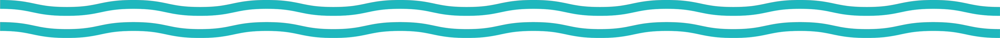

O projecto Rios de Portugal é uma odisseia artística focada na homenagem e recolha de informação sobre todos os cursos de água existentes em território nacional. Através da expressão plástica, video e digital procuramos acordar as populações para a sua importância. A importância dos rios mas também de tudo em seu redor, fauna, flora e tudo o que acompanha as margens. Acreditamos fielmente que esta riqueza é incalculável e queremos em comunidade celebrar esta fertilidade necessária à nossa sobrevivência. Numa era em que imperam os bens materiais, num tempo em que o individuo está alienado e rodeado de confortos, desejamos resgatar as pessoas de volta à natureza, de volta à ordem natural. Queremos conectar a comunidade a ela própria. Conhecermos o nosso rio significa conhecermos a nós próprios intimamente, os nossos costumes, as nossa tradições, a nossa cultura, o nosso legado, o passado e quem sabe o futuro. E este caminho do conhecimento só pode ser feito de forma co- lectiva, com a sabedoria de todos. Iniciemos este mergulho.